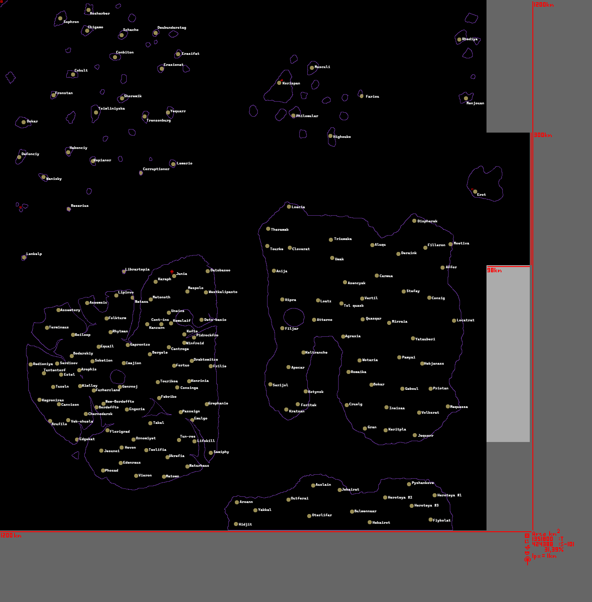

There is a lot of islands, archipelagos and continents. Islands are small patches of land. They can reach 15km² at least. They can erode out. It was thought, islands float, but yet there is no confirmation to that.
Continents are big islands. They experience erotion and breaking into islands or archipelago. Currently there is detected 5 islands, last 3 of them are visible. First 2 of them were located around ESC, 1st is located on east of ESC nearby, 2nd is located on south east of ESC nearby and it was bigger in comparasion to 1st continent.
On islands there are cities. They are contrentration points, where most of services and handlers are clusterised. Their size reach up to 5km in radius. They all have names, what reflect history or culture of the city.
Between islands surround void.
Around all that goes the Essence, it lits everything over the islands and doesn't under them.